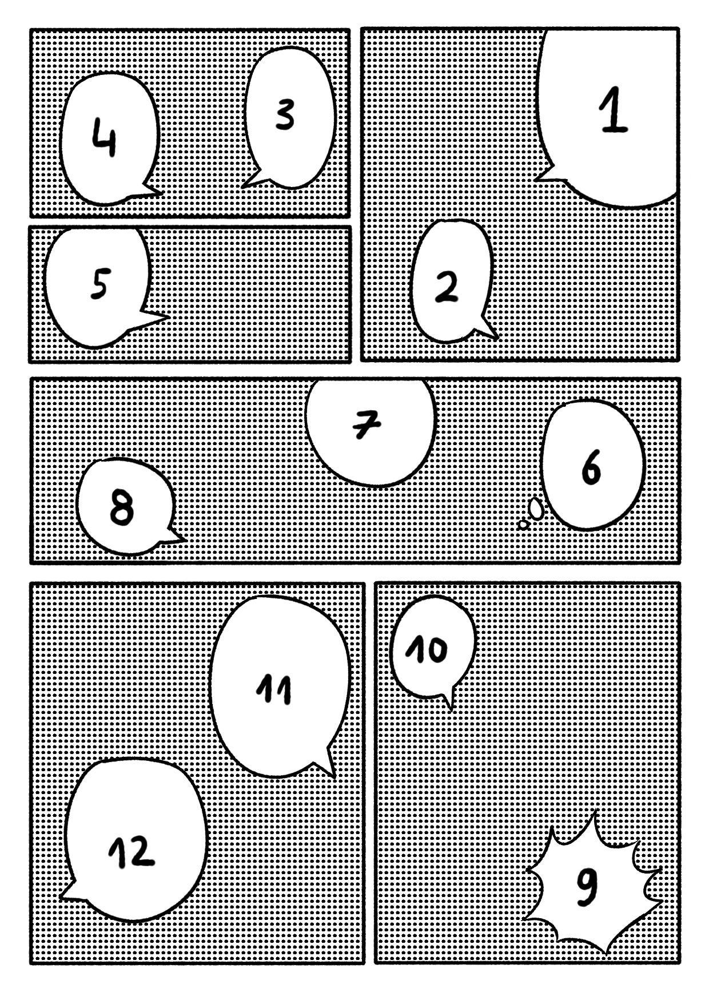

Manga, and comics inspired by it, are traditionally read in the opposite order to Western comics. Pages are read from right to left, and within each page, panels are followed from the top right corner toward the bottom left. The same applies to speech bubbles — if a panel contains more than one, the one placed furthest to the right is read first. Before moving on to the next panel, make sure you've taken in every element of the current one, including smaller details and sound effects drawn alongside the artwork. Once you get used to this order, reading quickly becomes intuitive, often within just a few pages.